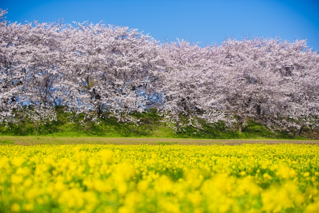

権現堂桜堤
約1,000本のソメイヨシノと菜の花が同時に咲き誇る、春の風物詩スポット。ピンクと黄色のコントラストは訪れる人々を魅了します。
埼玉の春は、桜や菜の花、芝桜などの花が咲き誇る季節。
春の訪れとともに、自然や歴史を感じる旅をお楽しみください。
お花見・春祭り・芝桜まつりなど、春ならではのイベントを紹介します。
桜並木や花の名所を中心に、春の絶景スポットをご案内します。
画像素材：photoAC（https://www.photo-ac.com/）
約1,000本のソメイヨシノと菜の花が同時に咲き誇る、春の風物詩スポット。ピンクと黄色のコントラストは訪れる人々を魅了します。
江戸時代から続く桜の名所。約2kmに渡る桜並木が利根川沿いに続き、春の散策にぴったりの絶景スポットです。
秩父の春を代表する名所。丘一面を覆う芝桜がパッチワークのように広がり、毎年多くの観光客が訪れます。